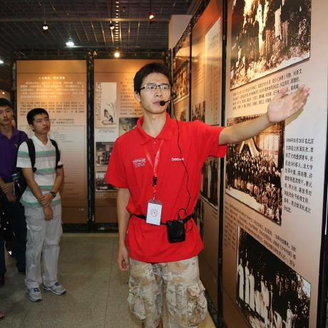

# 关于我

你好，我是Listen young，毕业于北京大学计算机系，上面是我以前在校史馆做志愿讲解员的时候。目前从事前端行业5年多，是Moka (opens new window)的前端负责人。
曾经在基础架构部写过C++，在嵌入式平台写过C，参与过Java开源项目，搞过大数据算法竞赛等等，不过那些都是很久以前的过去式啦，现在也基本上都忘干净了。因为喜欢一切新鲜有趣的东西，喜欢去折腾，所以兜兜转转最后留在了前端，算是全栈吧，毕竟也搞了蛮久node。
我是一个非常喜欢技术的人，目前在Moka负责前端团队，但是主要工作偏管理，接触技术的时间越来越少了，哎，心痛，我还是会尽量抽业余时间搞搞的。你问我为什么做管理了？哈哈哈，这是个有趣的故事，说来话长，总之并不是我一开始的职业规划，如果有机会再亲自告诉你吧。
这个博客主要是写点个人的思考和收获，内容主要涉及技术和管理，基本上都是原创，偶尔看到一些有意思的文章也会翻译过来。我始终认为，分享是最好的学习方式（当然实践也相当重要），因此写博客主要是为了促进我自己的学习，其次如果这些流水账能够帮助到一两个人，那就更好了。
如果你觉得我写的东西有点意思，不妨收藏一波，不定期看看，更新频率不高，平均2、3周写一篇吧。
业余时间也搞了一个小公众号，主要是发一些程序员幽默搞笑图片，欢迎关注😎

对了，我们团队也一直在招聘，欢迎前端小伙伴加入，要求如下：

下方是内推码，欢迎扫码投递。

此外有什么问题也欢迎在下方留言，看到了就会回复。